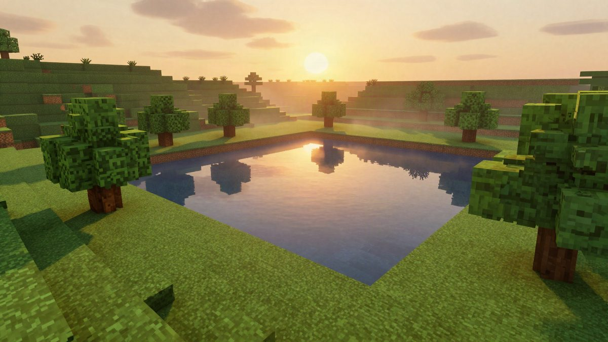

Minecraft za Switch 2 je stigao s boljim svjetlom i sjenama, a vlasnici Switch verzije plaćaju oko 0,60 eura

Studio Mojang i tvrtka Microsoft objavili su Minecraft za Nintendo Switch 2 s vizualnim stilom Vibrant Visuals i Super Mario mash-up paketom. Vlasnici digitalne Switch verzije mogu ga do 31. siječnja 2027. kupiti za 100 jena, oko 0,60 eura. U Japanu standardno izdanje košta 4.730 jena, a cijene u Europi nisu poznate.
Mojang i Microsoft objavili su 28. listopada 2026. Minecraft za Nintendo Switch 2. U Japanu standardno izdanje košta 4.730 jena (oko 28 eura), Deluxe Collection 5.830 jena (oko 35 eura), a Ultimate Collection 7.370 jena (oko 44 eura). Cijene i dostupnost u Europi još nisu poznate.
Vlasnici digitalne Switch verzije Minecrafta imaju posebnu ponudu. Do 31. siječnja 2027. Switch 2 verziju mogu kupiti za 100 jena (oko 0,60 eura).
Switch 2 verzija podržava novi vizualni stil Vibrant Visuals. Donosi osvjetljenje koje ovisi o smjeru svjetla, volumetrijsku maglu, sjene koje se mijenjaju tijekom dana i refleksije na površini vode.
Mario paket i izdanja
U igru je uključen Super Mario Mash-Up Pack s 15 skladbi inspiriranih serijalom Super Mario i 40 skinova za igrača.
Deluxe Collection uz igru donosi tri add-ona, tri ekskluzivna predmeta za Character Creator i 700 Minecoina, valute unutar igre.
Ultimate Collection uključuje pet add-ona, među kojima su i tri iz Deluxe izdanja. Uz to dolaze pet ekskluzivnih predmeta za Character Creator i 1.000 Minecoina.
Ponuda od 100 jena vrijedi samo za one koji imaju preuzetu (digitalnu) Switch verziju igre.
Izvor: Game Watch